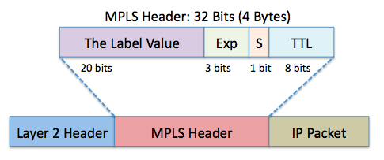
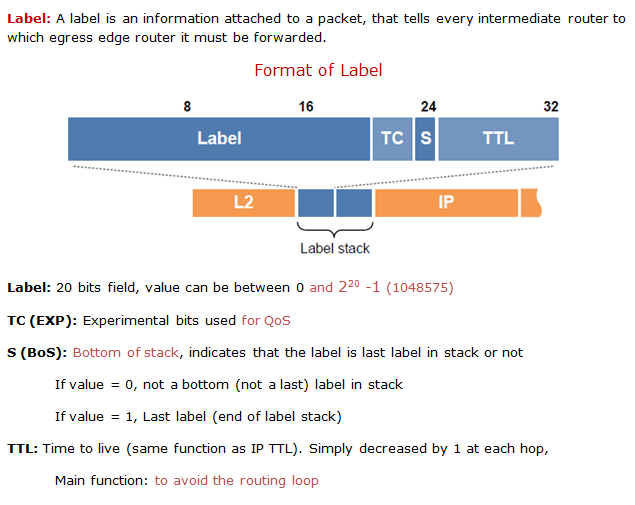
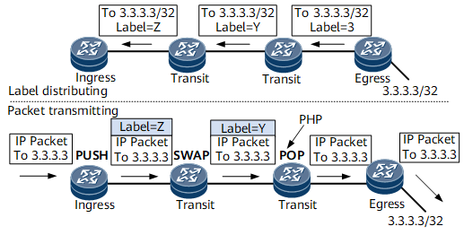
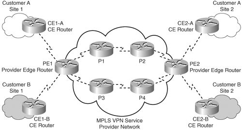

1. บทนำ (Introduction)
MPLS (Multiprotocol Label Switching) คือเทคโนโลยีการส่งข้อมูลที่ทำงานอยู่ ระหว่าง Layer 2 และ Layer 3 (มักเรียกว่า "Layer 2.5") ของ OSI Model เป็นเทคโนโลยีที่พัฒนาโดย IETF (Internet Engineering Task Force) เพื่อแก้ไขข้อจำกัดของการ Routing แบบเดิม
วัตถุประสงค์หลักของ MPLS:
- เพิ่มความเร็วในการส่งข้อมูล โดยลดเวลาในการประมวลผล Routing Decision
- สนับสนุน Traffic Engineering (TE) และ VPN ได้อย่างมีประสิทธิภาพ
- ลดภาระการประมวลผลที่ Router ด้วยการใช้ Label แทนการวิเคราะห์ IP Header ทั้งหมด
- รองรับการทำ QoS (Quality of Service) อย่างมีประสิทธิภาพ
- สร้างความยืดหยุ่นในการออกแบบเครือข่าย
ในปัจจุบัน MPLS ถูกใช้งานอย่างแพร่หลายในเครือข่ายของผู้ให้บริการอินเทอร์เน็ต (ISP) และองค์กรขนาดใหญ่ที่ต้องการความเสถียร ความปลอดภัย และความสามารถในการจัดการ Traffic ภายในเครือข่าย
2. หลักการทำงานเบื้องต้น (Basic Concept)
2.1 การแท็กแพ็กเก็ต (Labeling)
แทนที่การส่งต่อข้อมูลด้วยการอ่าน IP Header ทั้งหมด, MPLS จะ เพิ่ม Label Stack ไว้ข้างหน้า Packet แล้ว Router อ่าน Label เพื่อ Forward Packet อย่างรวดเร็ว

ภาพแสดงการทำงานของ MPLS ในการติด Label บนแพ็กเก็ต
การใช้ Label ช่วยให้ Router ไม่จำเป็นต้องทำ IP Lookup ที่ซับซ้อนทุกครั้ง แต่สามารถใช้ Label ในการตัดสินใจเลือกเส้นทางได้ทันที ทำให้การส่งข้อมูลเร็วขึ้น
2.2 อุปกรณ์สำคัญ
LER (Label Edge Router)
Router ที่ทำงานที่ขอบเขตของ MPLS Domain มีหน้าที่หลักคือ:
- Ingress LER: ใส่ Label ให้แพ็กเก็ตที่เข้าสู่เครือข่าย MPLS
- Egress LER: ถอด Label ออกเมื่อแพ็กเก็ตจะออกจากเครือข่าย MPLS
LSR (Label Switch Router)
Router ที่อยู่ภายใน MPLS Network ที่ทำหน้าที่ Swap Label (เปลี่ยน Label)
LSR จะอ่าน Incoming Label จากนั้นจะเปลี่ยนเป็น Outgoing Label และส่งต่อไปยัง Router ถัดไปตาม Label Forwarding Table
ข้อควรรู้: ในทางปฏิบัติ อุปกรณ์ Router แต่ละตัวสามารถทำหน้าที่ได้ทั้ง LER และ LSR ขึ้นอยู่กับตำแหน่งในเครือข่ายและการกำหนดค่า
3. รูปแบบแพ็กเก็ต (MPLS Packet Format)
3.1 MPLS Label Header (ขนาด 32 bits)
MPLS Header มีขนาด 32 bits (4 bytes) แทรกอยู่ระหว่าง Layer 2 Header และ Layer 3 Header ประกอบด้วยฟิลด์ต่างๆ ดังนี้:
| Field | ขนาด | อธิบาย |
|---|---|---|
| Label | 20 bits | หมายเลข Label ที่ใช้สำหรับ Forwarding |
| Exp (Experimental) | 3 bits | ใช้สำหรับ QoS (เช่น DiffServ) |
| S (Bottom of Stack) | 1 bit | ระบุว่าเป็น Label สุดท้ายหรือไม่ (1 = Label สุดท้าย) |
| TTL (Time To Live) | 8 bits | ป้องกัน Loop เช่นเดียวกับ IP TTL |
ตัวอย่าง MPLS Header:
+-+-+-+-+-+-+-+-+-+-+-+-+-+-+-+-+-+-+-+-+-+-+-+-+-+-+-+-+-+-+-+-+ | Label |Exp|S| TTL | +-+-+-+-+-+-+-+-+-+-+-+-+-+-+-+-+-+-+-+-+-+-+-+-+-+-+-+-+-+-+-+-+
เช่น Label = 104857, Exp = 0, S = 1, TTL = 255
3.2 MPLS Stack
MPLS สามารถมี หลาย Label ซ้อนกันได้ (Label Stack) เช่นในกรณีของ VPN หรือ TE
- Outer Label: สำหรับการ Forwarding ใน Core Network
- Inner Label: ใช้บอก VPN หรือ Service ที่จะถึง

ภาพแสดงโครงสร้างของ MPLS Label Stack
4. การทำงานเชิงลึก (MPLS Label Switching)
4.1 การตั้ง Label (Label Distribution)
ก่อนที่ MPLS จะส่งข้อมูลได้ จำเป็นต้องมีการแจกจ่าย Label ระหว่าง Router โดยมีโปรโตคอลที่ใช้ดังนี้:
- LDP (Label Distribution Protocol): แจก Label แบบอัตโนมัติตาม IP Routing Table
- RSVP-TE (Resource Reservation Protocol - Traffic Engineering Extension): สำหรับการทำ Traffic Engineering โดยกำหนดเส้นทางเฉพาะ
- BGP: แจก Label สำหรับ MPLS VPN (Layer 3 VPN)
การแจก Label มี 2 วิธี:
- Downstream Unsolicited: ส่ง Label ไปก่อน แม้ไม่มีใครขอ
- Downstream on Demand: ส่ง Label เมื่อถูกร้องขอ
4.2 MPLS Data Plane Operation
- Ingress LER รับแพ็กเก็ตจากลูกข่าย → ใส่ Label (Push)
- LSR อ่าน Label → สลับ (Swap) → ส่งต่อ
- Egress LER ถอด (Pop) Label → ส่งแพ็กเก็ตแบบปกติ (IP)

ภาพแสดงกระบวนการส่งข้อมูลผ่านเครือข่าย MPLS
4.3 ตัวอย่างการทำงาน
- IP Packet มาถึง Ingress Router
- Ingress ใส่ MPLS Label 102
- Packet ส่งไป LSR-1 → LSR-1 เปลี่ยน Label เป็น 203
- LSR-2 เปลี่ยน Label เป็น 304
- ถึง Egress → ถอด Label → ส่ง IP Packet ออกไปยังปลายทาง
4.4 Penultimate Hop Popping (PHP)
เป็นเทคนิคที่ Router ก่อนถึง Egress จะถอด Label ออกก่อน เพื่อลดภาระ Egress Router ทำให้ Egress Router ไม่ต้องทำงานสองอย่างพร้อมกัน (ถอด Label และ IP Lookup)
5. Traffic Engineering (MPLS-TE)
MPLS สามารถบังคับเส้นทาง Packet ให้วิ่งตามที่เราต้องการ (ไม่ใช่วิ่งตาม IGP Metric) โดยใช้ RSVP-TE
ความสามารถของ MPLS-TE
- ตั้งเส้นทาง (Explicit Path) ได้ตามต้องการ
- จองแบนด์วิธล่วงหน้า (Bandwidth Reservation)
- ใช้ Constraint-based Routing เพื่อเลือกเส้นทางที่เหมาะสม
ประโยชน์ของ MPLS-TE
- สามารถกระจาย Traffic ให้สมดุล
- เลือกเส้นทางที่มี Delay ต่ำสำหรับ Traffic ที่ต้องการความเร็ว
- หลีกเลี่ยงลิงก์ที่ใกล้เต็มความจุ
- ลดความเสี่ยงจากการเกิด Congestion
การทำ MPLS-TE ต้องอาศัยการปรับแต่ง IGP (OSPF หรือ IS-IS) เพื่อให้สามารถส่งข้อมูลเกี่ยวกับทรัพยากรของเครือข่าย เช่น แบนด์วิธที่เหลือ ซึ่งปกติ IGP จะไม่มีข้อมูลเหล่านี้
6. MPLS VPN (MPLS Layer 3 VPN)
การใช้ MPLS เพื่อเชื่อมเครือข่าย Private หลายๆ Site ผ่านเครือข่าย Service Provider โดยแยก Traffic ของลูกค้าแต่ละรายออกจากกัน
Key Concept
- VRF (Virtual Routing and Forwarding): Routing Table แยกตามลูกค้า
- MP-BGP (Multiprotocol BGP): แจก Route พร้อม Label
- PE (Provider Edge Router): ทำหน้าที่ใส่/ถอด Label และแยก VPN
- P (Provider Router): Router ภายในของผู้ให้บริการที่ไม่รู้จักข้อมูล VPN
- CE (Customer Edge Router): Router ของลูกค้าที่เชื่อมต่อกับ PE
Label 2 ชั้น
- Outer Label: สำหรับส่งใน Core Network (Transport Label)
- Inner Label: สำหรับระบุ VPN (VPN Label)

ภาพแสดงสถาปัตยกรรมของ MPLS Layer 3 VPN
ประโยชน์ของ MPLS VPN
- แยก Traffic ของลูกค้าแต่ละรายได้อย่างสมบูรณ์
- รองรับการใช้งาน IP Address ซ้ำกันระหว่างลูกค้าต่างราย
- ลดความซับซ้อนในการบริหารจัดการเครือข่าย
- สามารถรองรับการเชื่อมต่อได้หลากหลายรูปแบบ (Full-Mesh, Hub-and-Spoke, Partial-Mesh)
7. MPLS QoS
MPLS สามารถรองรับการทำ Quality of Service (QoS) เพื่อจัดลำดับความสำคัญของ Traffic ต่างๆ ได้อย่างมีประสิทธิภาพ
- ใช้ Exp field (3 bits) บน Label Header สำหรับการทำ Class of Service (CoS)
- สามารถทำ Priority Queuing, Policing, Shaping ตาม Exp value ได้
- รองรับการ Map ค่า QoS จาก IP DSCP เข้าสู่ MPLS Exp และ Map กลับเมื่อออกจากเครือข่าย MPLS
เดิม Exp field มีชื่อว่า "CoS field" แต่ปัจจุบันมักเรียกว่า "TC field" (Traffic Class) ในมาตรฐานใหม่
MPLS QoS Model
- Pipe Model: ค่า QoS ภายใน MPLS Network ไม่ส่งผลต่อ QoS ในขาออก
- Uniform Model: ค่า QoS มีการส่งผ่านตลอดทั้งเครือข่าย
- Short Pipe Model: ผสมระหว่าง Pipe และ Uniform
8. MPLS Protection Mechanisms
MPLS มีกลไกป้องกันความเสียหายเมื่อเกิดการล่มของเครือข่าย (Network Failure) หลายรูปแบบ:
Fast Reroute (FRR)
เทคโนโลยีที่ช่วยให้เครือข่ายสามารถเปลี่ยนเส้นทางได้อย่างรวดเร็วเมื่อเกิดความเสียหาย โดยมีเป้าหมายให้การเปลี่ยนเส้นทางใช้เวลาน้อยกว่า 50 ms
- Link Protection: ป้องกันเฉพาะลิงก์ที่เสียหาย
- Node Protection: ป้องกันทั้ง Node ที่เสียหาย
MPLS-TE Backup LSPs
การสร้างเส้นทางสำรองล่วงหน้า (Backup LSP) เพื่อใช้ในกรณีที่เส้นทางหลักมีปัญหา
- One-to-One Backup: สร้าง Backup LSP แยกเป็นรายๆ
9. MPLS Basic commands
คำสั่งที่ใช้เกี่ยวกับการตั้งค่าและตรวจสอบ MPLS Protection มีดังนี้:
Enable MPLS on Interface
mpls ip
ใช้เปิดการทำงาน MPLS บน interface
กำหนดช่วงหมายเลข Label ใน Global Configuration
mpls label range 200 299
(แนะนำให้ reload หลังจากตั้งค่า)
หมายเหตุสำหรับ PE Router
Interface ของ PE Router ที่เชื่อมกับ CE Router ไม่ต้องสั่ง mpls ip
คำสั่งตรวจสอบ MPLS LDP
show mpls ldp neighbor
ตรวจสอบเพื่อนบ้านที่ใช้ LDP
คำสั่งตรวจสอบ MPLS Label Binding
show mpls ldp bindings
แสดงการจับคู่ (mapping) ระหว่าง prefix และ label
ดู Binding เฉพาะ Destination ที่ต้องการ
show mpls ldp bindings [Destination network with subnet mask]
ตรวจสอบ Label ที่ติดอยู่ในเส้นทาง
show mpls forwarding-table